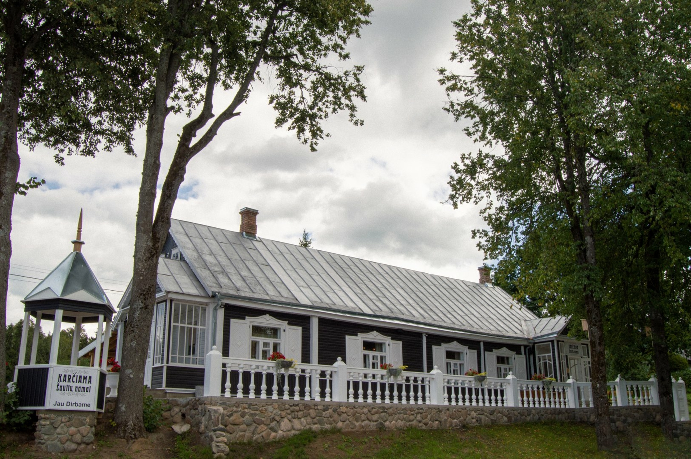

Skiemonys. Ką jūs žinote apie juos? Čia, vidury miestelio, įsikūrė karčiama ,,Šaulių namai“. Ši vieta laukia ne tik tų, kurie išsiilgo kaimiškų lietuviškų patiekalų , bet ir tų, kurie laiko mašina norėtų nukeliauti į močiutės „gryčiūtę“. Aplinka užburia istorijomis apie buvusį kaimo gyvenimą, nuotraukose galima surasti senus pažįstamus. Karčiamoje pavalgius galima aplankyti vos už kelių žingsnių esantį Palaimintojo Teofiliaus Matulionio muziejų. Lauke įrengta terasa, bei vaikų žaidimo aikštelė. Turistams siūlome paragauti cepelinų, naminių virtinių, lietinių.